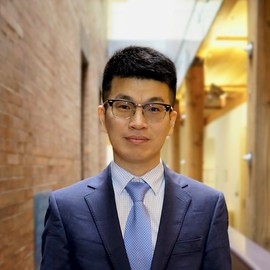

International economics at Michigan State University brings together research in international trade, international finance, and open-economy macroeconomics. Our faculty study how global markets, firms, financial systems, and public policy shape economic outcomes. The group hosts an external speakers seminar in international economics and macroeconomics, offers first-year PhD core courses in macroeconomics, and provides second-year PhD field courses.
Faculty (back to top)

The International Trade group includes Carl Davidson, Guangbin Hong, Steven Matusz, John (Jay) Wilson, Chun (Susan) Zhu, and Oren Ziv. Their work spans trade, labor markets, taxation, multinational enterprises, firm behavior, economic geography, spatial sorting, and the distributional consequences of globalization. The International Macro and Finance group includes Raoul Minetti and Eric Wentao Zhou. Its research examines international financial markets, firms, and banking in global business cycles, with particular attention to how financial frictions and public policy transmit shocks across countries.
Selected Publications (back to top)
- , Financial Shocks and Firm Innovation in Supply Chain Networks,
Management Science, 2026. - , From local to global: How foreign acquisitions reshape job mobility,
Journal of International Economics, 2026. - , A Test for Pricing Power in Urban Housing Markets,
Review of Economics and Statistics, forthcoming. - , Banking complexity in the global economy,
Journal of International Economics, 2025. - , Global banking and macroeconomic stability. Liquidity, control, and monitoring,
Journal of International Economics, 2025. - , Persistent slumps: Innovation and the credit channel of monetary policy,
European Economic Review, 2025. - , A macroeconomic perspective on taxing multinational enterprises,
Journal of International Economics, 2024. - , Entrepôt: Hubs, Scale, and Trade Costs,
American Economic Journal: Macroeconomics, 2024. - , Optimal taxation of multinational enterprises: A Ramsey approach,
Journal of Monetary Economics, 2024. - , Productivity, Place, and Plants,
Review of Economics and Statistics, 2024. - , The Internal Geography of Firms,
Journal of International Economics, 2024. - , Credit markets, relationship lending, and the dynamics of firm entry,
Review of Economic Dynamics, 2023. - , Firms and Industry Agglomeration,
Journal of Urban Economics, 2023. - , Tax competition with two tax instruments — and tax base erosion,
Journal of Public Economics, 2023. - , Liquidity and discipline: Bank due diligence over the business cycle,
Journal of the European Economic Association, 2022. - , Local Policy Choice: Theory and Empirics,
Journal of Economic Literature, 2022. - , Bank regulation and monetary policy transmission: Evidence from the U.S. States liberalization,
European Economic Review, 2021. - , Relationship finance, informed liquidity, and monetary policy,
Journal of Economic Theory, 2021. - , Recessions and recoveries: Multinational banks in the business cycle,
Journal of Monetary Economics, 2021. - , Globalization, the jobs ladder and economic mobility,
European Economic Review, 2020. - , Credit crunches, asset prices and technological change,
Review of Economic Dynamics, 2019. - , Financial constraints, firms’ supply chains, and internationalization,
Journal of the European Economic Association, 2019. - , Financial markets, industry dynamics, and growth,
The Economic Journal, 2019. - , Tax competition with heterogeneous capital mobility,
Journal of Public Economics, 2018. - , Global engagement and the occupational structure of firms,
European Economic Review, 2017. - , Unhappy Cities,
Journal of Labor Economics, 2016.
Research and teaching activities (back to top)
We have an external speakers seminar, an internal speakers brown bag, and a study group. We offer first-year PhD core courses in macroeconomics and second-year PhD field courses in international trade and macroeconomics.
PhD courses
- EC813A: Macroeconomics I
- EC813B: Macroeconomics II and its Mathematical Foundations
- EC825: Numerical Methods I
- EC825: Numerical Methods II
- EC843: Advanced Topics in International Trade